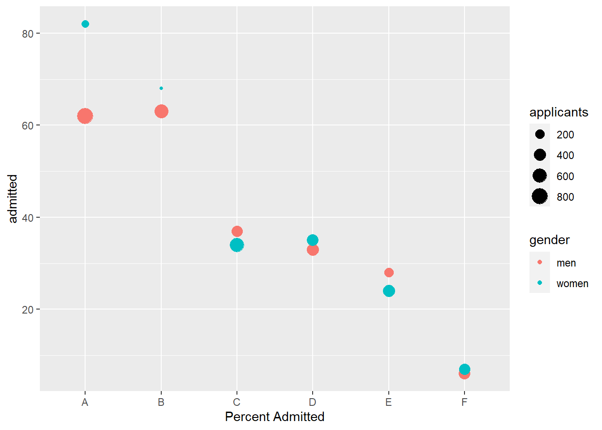
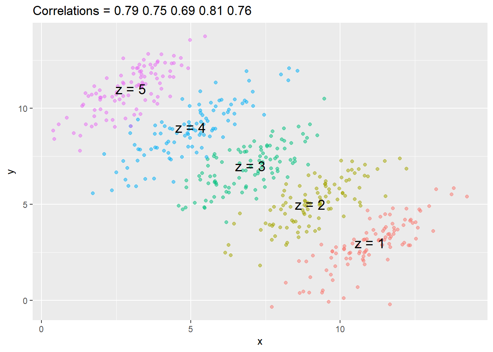

varnames = c('Y','X1','X2','X3','X1:X3','X4*X5')
paste(varnames[2:4], collapse = ' + ')[1] "X1 + X2 + X3"As with recent weeks, we will work with real data during the lecture. Please download the following dataset and load it into R.
R note:We learned that we can run a regression with all variables in a dataset using, for example, SalePrice ~ .
In your lab this week, you are asked to run 15 models (!) of increasing complexity, where “complexity” is defined in one question as adding an additional linear term. So if you had \(X1\), \(X2\), and \(X3\) as explanatory variables, you might want to have a model that is:
\[Y = \beta_0 + \beta_1 X1\]
and then
\[Y = \beta_0 + \beta_1 X1 + \beta_2 X2\]
and so on. How you do so is up to you – you could do a list of formulas constructed with paste, then use lapply to that list. Or you could wisely use the ~ . part of the formula and change the columns in the data you pass to lm. Here are a few tips pertaining to some of the ways of doing this.
If you have a dataset called DesMoines and a character vector of all of your columns in DesMoines like so varnames = c('Y','X1','X2','X3'), and it’s in the order in which you’d like to add the variables to the model, then:
DesMoines %>% dplyr::select(varnames[1:N])would select the first N variables. A loop on N from 2 to 4 would give you c('Y','X1') then c('Y','X1','X2') and so on.
Another handy tip is using paste with collapse = '+'. This will let you include interactions
varnames = c('Y','X1','X2','X3','X1:X3','X4*X5')
paste(varnames[2:4], collapse = ' + ')[1] "X1 + X2 + X3"This will put all of the things in the vector together with + between them. Wisely pasting Y ~ onto this, then using as.formula() lets you make a formula object from a character vector. Handy!
Association is not causation is perhaps the most important lesson one learns in a statistics class. Correlation is not causation is another way to say this. Throughout the previous parts of this class, we have described tools useful for quantifying associations between variables. However, we must be careful not to over-interpret these associations.
There are many reasons that a variable \(X\) can be correlated with a variable \(Y\) without having any direct effect on \(Y\). Here we examine four common ways that can lead to misinterpreting data.
The following comical example underscores that correlation is not causation. It shows a very strong correlation between divorce rates and margarine consumption.
Does this mean that margarine causes divorces? Or do divorces cause people to eat more margarine? Of course the answer to both these questions is no. This is just an example of what we call a spurious correlation.
You can see many more absurd examples on the Spurious Correlations website1.
The cases presented in the spurious correlation site are all instances of what is generally called data dredging, data fishing, or data snooping. It’s basically a form of what in the US we call cherry picking. An example of data dredging would be if you look through many results produced by a random process and pick the one that shows a relationship that supports a theory you want to defend.
A Monte Carlo simulation can be used to show how data dredging can result in finding high correlations among uncorrelated variables. We will save the results of our simulation into a tibble:
N <- 25
g <- 1000000
sim_data <- tibble(group = rep(1:g, each=N),
x = rnorm(N * g),
y = rnorm(N * g))The first column denotes group. We created groups and for each one we generated a pair of independent vectors, \(X\) and \(Y\), with 25 observations each, stored in the second and third columns. Because we constructed the simulation, we know that \(X\) and \(Y\) are not correlated.
Next, we compute the correlation between X and Y for each group and look at the max:
res <- sim_data %>%
group_by(group) %>%
summarize(r = cor(x, y)) %>%
arrange(desc(r))
res# A tibble: 1,000,000 × 2
group r
<int> <dbl>
1 648278 0.852
2 404745 0.831
3 239061 0.768
4 979172 0.766
5 565886 0.763
6 496951 0.759
7 165110 0.756
8 916022 0.751
9 635400 0.749
10 655316 0.749
# ℹ 999,990 more rowsWe see a maximum correlation of 0.852 and if you just plot the data from the group achieving this correlation, it shows a convincing plot that \(X\) and \(Y\) are in fact correlated:
sim_data %>% filter(group == res$group[which.max(res$r)]) %>%
ggplot(aes(x, y)) +
geom_point() +
geom_smooth(method = "lm")Remember that the correlation summary is a random variable. Here is the distribution generated by the Monte Carlo simulation:
res %>% ggplot(aes(x=r)) + geom_histogram(binwidth = 0.1, color = "black")It’s just a mathematical fact that if we observe random correlations that are expected to be 0, but have a standard error of 0.2041623, the largest one will be close to 1.
If we performed regression on this group and interpreted the p-value, we would incorrectly claim this was a statistically significant relation:
library(broom)
sim_data %>%
filter(group == res$group[which.max(res$r)]) %>%
do(tidy(lm(y ~ x, data = .))) %>%
filter(term == "x")# A tibble: 1 × 5
term estimate std.error statistic p.value
<chr> <dbl> <dbl> <dbl> <dbl>
1 x 0.602 0.0773 7.79 0.0000000670Now, imagine that instead of a whole lot of simulated data, you had a whole lot of actual data and waded through enough of it to find two unrelated variables that happened to show up as correlated (like divorce rates and pounds of margarine consumed). This particular form of data dredging is referred to as p-hacking. P-hacking is a topic of much discussion because it is a problem in scientific publications. Because publishers tend to reward statistically significant results over negative results, there is an incentive to report significant results. In epidemiology and the social sciences, for example, researchers may look for associations between an adverse outcome and a lot of different variables that represent exposures and report only the one exposure that resulted in a small p-value. Furthermore, they might try fitting several different models to account for confounding and pick the one that yields the smallest p-value. In experimental disciplines, an experiment might be repeated more than once, yet only the results of the one experiment with a small p-value reported. This does not necessarily happen due to unethical behavior, but rather as a result of statistical ignorance or wishful thinking. In advanced statistics courses, you can learn methods to adjust for these multiple comparisons.
Suppose we take measurements from two independent outcomes, \(X\) and \(Y\), and we standardize the measurements. However, imagine we make a mistake and forget to standardize entry 23. We can simulate such data using:
set.seed(1985)
x <- rnorm(100,100,1)
y <- rnorm(100,84,1)
x[-23] <- scale(x[-23])
y[-23] <- scale(y[-23])The data look like this:
ggplot() +
geom_point(aes(x,y))Not surprisingly, the correlation is very high:
cor(x,y)[1] 0.9878382But this is driven by the one outlier. If we remove this outlier, the correlation is greatly reduced to almost 0, which is what it should be:
cor(x[-23], y[-23])[1] -0.04419032Previously, we (briefly) described alternatives to the average and standard deviation that are robust to outliers. There is also an alternative to the sample correlation for estimating the population correlation that is robust to outliers. It is called Spearman correlation. The idea is simple: compute the correlation on the ranks of the values. Here is a plot of the ranks plotted against each other:
ggplot() +
geom_point(aes(x = rank(x), y = rank(y)))
The outlier is no longer associated with a very large value and the correlation comes way down:
cor(rank(x), rank(y))[1] 0.002508251Spearman correlation can also be calculated like this:
cor(x, y, method = "spearman")[1] 0.002508251There are also methods for robust fitting of linear models which you can learn about in, for instance, this book: Robust Statistics: Edition 2 by Peter J. Huber & Elvezio M. Ronchetti.
Another way association is confused with causation is when the cause and effect are reversed. An example of this is claiming that tutoring makes students perform worse because they test lower than peers that are not tutored. In this case, the tutoring is not causing the low test scores, but the other way around.
A form of this claim actually made it into an op-ed in the New York Times titled Parental Involvement Is Overrated2. Consider this quote from the article:
When we examined whether regular help with homework had a positive impact on children’s academic performance, we were quite startled by what we found. Regardless of a family’s social class, racial or ethnic background, or a child’s grade level, consistent homework help almost never improved test scores or grades… Even more surprising to us was that when parents regularly helped with homework, kids usually performed worse.
A very likely possibility is that the children needing regular parental help, receive this help because they don’t perform well in school.
We can easily construct an example of cause and effect reversal using the father and son height data. If we fit the model:
\[X_i = \beta_0 + \beta_1 y_i + \varepsilon_i, i=1, \dots, N\]
to the father and son height data, with \(X_i\) the father height and \(y_i\) the son height, we do get a statistically significant result:
library(HistData)
data("GaltonFamilies")
GaltonFamilies %>%
filter(childNum == 1 & gender == "male") %>%
select(father, childHeight) %>%
rename(son = childHeight) %>%
do(tidy(lm(father ~ son, data = .)))# A tibble: 2 × 5
term estimate std.error statistic p.value
<chr> <dbl> <dbl> <dbl> <dbl>
1 (Intercept) 34.0 4.57 7.44 4.31e-12
2 son 0.499 0.0648 7.70 9.47e-13The model fits the data very well. If we look at the mathematical formulation of the model above, it could easily be incorrectly interpreted so as to suggest that the son being tall caused the father to be tall. But given what we know about genetics and biology, we know it’s the other way around. The model is technically correct. The estimates and p-values were obtained correctly as well. What is wrong here is the interpretation.
Confounders are perhaps the most common reason that leads to associations begin misinterpreted.
If \(X\) and \(Y\) are correlated, we call \(Z\) a confounder if changes in \(Z\) causes changes in both \(X\) and \(Y\). Earlier, when studying baseball data, we saw how Home Runs was a confounder that resulted in a higher correlation than expected when studying the relationship between Bases on Balls and Runs. In some cases, we can use linear models to account for confounders. However, this is not always the case.
Incorrect interpretation due to confounders is ubiquitous in the lay press and they are often hard to detect. Here, we present a widely used example related to college admissions.
Admission data from six U.C. Berkeley majors, from 1973, showed that more men were being admitted than women: 44% men were admitted compared to 30% women. PJ Bickel, EA Hammel, and JW O’Connell. Science (1975). We can load the data and calculate the “headline” number:
library(dslabs)
data(admissions)
admissions %>% group_by(gender) %>%
summarize(percentage =
round(sum(admitted*applicants)/sum(applicants),1))# A tibble: 2 × 2
gender percentage
<chr> <dbl>
1 men 44.5
2 women 30.3# Note: "admitted" is PERCENT admittedThe chi-squared test compares two groups with binary outcomes (like “admit” and “nonadmit”). The null hypothesis is that the groups are not differently distributed between the outcomes. Here’s what the data looks like going in – its in counts of “admitted” and “not admitted”.
admissions %>% group_by(gender) %>%
summarize(total_admitted = round(sum(admitted / 100 * applicants)),
not_admitted = sum(applicants) - sum(total_admitted)) %>%
select(-gender) # A tibble: 2 × 2
total_admitted not_admitted
<dbl> <dbl>
1 1198 1493
2 557 1278A low p-value rejects this hypothesis. Here, the test clearly rejects the hypothesis that gender and admission are independent:
admissions %>% group_by(gender) %>%
summarize(total_admitted = round(sum(admitted / 100 * applicants)),
not_admitted = sum(applicants) - sum(total_admitted)) %>%
select(-gender) %>%
do(tidy(chisq.test(.))) %>% .$p.value[1] 1.055797e-21But closer inspection shows a paradoxical result. Here are the percent admissions by major:
admissions %>% select(major, gender, admitted) %>%
spread(gender, admitted) %>%
mutate(women_minus_men_pct = women - men) major men women women_minus_men_pct
1 A 62 82 20
2 B 63 68 5
3 C 37 34 -3
4 D 33 35 2
5 E 28 24 -4
6 F 6 7 1Four out of the six majors favor women. More importantly, all the differences are much smaller than the 14.2 difference that we see when examining the totals.
The paradox is that analyzing the totals suggests a dependence between admission and gender, but when the data is grouped by major, this dependence seems to disappear. What’s going on? This actually can happen if an uncounted confounder is driving most of the variability.
So let’s define three variables: \(X\) is 1 for men and 0 for women, \(Y\) is 1 for those admitted and 0 otherwise, and \(Z\) quantifies the selectivity of the major. A gender bias claim would be based on the fact that \(\mbox{Pr}(Y=1 | X = x)\) is higher for \(x=1\) than \(x=0\). However, \(Z\) is an important confounder to consider. Clearly \(Z\) is associated with \(Y\), as the more selective a major, the lower \(\mbox{Pr}(Y=1 | Z = z)\). But is major selectivity \(Z\) associated with gender \(X\)?
One way to see this is to plot the total percent admitted to a major versus the percent of women that made up the applicants:
admissions %>%
group_by(major) %>%
summarize(major_selectivity = sum(admitted * applicants)/sum(applicants),
percent_women_applicants = sum(applicants * (gender=="women")) /
sum(applicants) * 100) %>%
ggplot(aes(major_selectivity, percent_women_applicants, label = major)) +
geom_text()There seems to be association. The plot suggests that women were much more likely to apply to the four “hard” majors: gender and major selectivity are confounded. Compare, for example, major B and major E. Major E is much harder to enter than major B and over 60% of applicants to major E were women, while less than 30% of the applicants of major B were women.
The following plot shows the number of applicants that were admitted and those that were not by major and gender:
It also breaks down the acceptances by major. This breakdown allows us to see that the majority of accepted men came from two majors: A and B. It also lets us see that few women applied to these majors.
In this plot, we can see that if we condition or stratify by major, and then look at differences, we control for the confounder and this effect goes away:
admissions %>%
ggplot(aes(major, admitted, col = gender, size = applicants)) +
geom_point() +
labs(x = 'Percent Admitted')
Now we see that major by major, there is not much difference. The size of the dot represents the number of applicants, and explains the paradox: we see large red dots and small blue dots for the easiest (least selective) majors, A and B.
If we average the difference by major, we find that the percent is actually 3.5% higher for women.
admissions %>% group_by(gender) %>% summarize(average = mean(admitted))# A tibble: 2 × 2
gender average
<chr> <dbl>
1 men 38.2
2 women 41.7The case we have just covered is an example of Simpson’s paradox. It is called a paradox because we see the sign of the correlation flip when comparing the entire publication and specific strata. As an illustrative example, suppose you have three random variables \(X\), \(Y\), and \(Z\) and that we observe realizations of these. Here is a plot of simulated observations for \(X\) and \(Y\) along with the sample correlation:
You can see that \(X\) and \(Y\) are negatively correlated. However, once we stratify by \(Z\) (shown in different colors below) another pattern emerges:

It is really \(Z\) that is negatively correlated with \(X\). If we stratify by \(Z\), the \(X\) and \(Y\) are actually positively correlated as seen in the plot above.
How do we stratify in regression? Depending on the relationship we think the variables have (conditional on \(Z\)). In the above example, it looks like an intercept shift would account for the differences across \(Z\) (note that the plot shows the correlation between \(Y\) and \(X\) for each value of \(Z\)):
summary(lm(y ~ x + as.factor(z), data = dat))
Call:
lm(formula = y ~ x + as.factor(z), data = dat)
Residuals:
Min 1Q Median 3Q Max
-3.6120 -0.5354 0.0269 0.5750 1.9138
Coefficients:
Estimate Std. Error t value Pr(>|t|)
(Intercept) -5.78432 0.34026 -17.00 <2e-16 ***
x 0.78805 0.02999 26.28 <2e-16 ***
as.factor(z)2 3.66771 0.12976 28.27 <2e-16 ***
as.factor(z)3 7.24256 0.16855 42.97 <2e-16 ***
as.factor(z)4 10.73651 0.21520 49.89 <2e-16 ***
as.factor(z)5 14.43156 0.26816 53.82 <2e-16 ***
---
Signif. codes: 0 '***' 0.001 '**' 0.01 '*' 0.05 '.' 0.1 ' ' 1
Residual standard error: 0.824 on 494 degrees of freedom
Multiple R-squared: 0.9301, Adjusted R-squared: 0.9294
F-statistic: 1315 on 5 and 494 DF, p-value: < 2.2e-16If we thought that the relationship between \(Y\) and \(X\) were different for each \(Z\) (not just the intercept), we could try allowing a slope-shift using interactions:
summary(lm(y ~ x*as.factor(z), data = dat))
Call:
lm(formula = y ~ x * as.factor(z), data = dat)
Residuals:
Min 1Q Median 3Q Max
-3.6383 -0.5431 0.0197 0.5581 1.9655
Coefficients:
Estimate Std. Error t value Pr(>|t|)
(Intercept) -6.22140 0.72249 -8.611 < 2e-16 ***
x 0.82776 0.06520 12.696 < 2e-16 ***
as.factor(z)2 4.55366 0.95253 4.781 2.31e-06 ***
as.factor(z)3 8.28606 0.88257 9.389 < 2e-16 ***
as.factor(z)4 11.02669 0.78302 14.082 < 2e-16 ***
as.factor(z)5 14.70047 0.76182 19.296 < 2e-16 ***
x:as.factor(z)2 -0.08900 0.09390 -0.948 0.344
x:as.factor(z)3 -0.12699 0.09712 -1.307 0.192
x:as.factor(z)4 -0.01018 0.08751 -0.116 0.907
x:as.factor(z)5 0.01720 0.10079 0.171 0.865
---
Signif. codes: 0 '***' 0.001 '**' 0.01 '*' 0.05 '.' 0.1 ' ' 1
Residual standard error: 0.8247 on 490 degrees of freedom
Multiple R-squared: 0.9306, Adjusted R-squared: 0.9293
F-statistic: 729.8 on 9 and 490 DF, p-value: < 2.2e-16